The Columbian Exposition

The World's Columbian Exposition opened on May 1, 1893 and closed on October 30. It marked the 400th anniversary of Columbus's landing, one year late. It was held on 633 acres of reclaimed swamp at the south end of Chicago's lakefront, in what is now Jackson Park. It was attended by 27.5 million people, in a country whose total population was 63 million. It was the largest gathering of human beings the United States had organized to that date. It was built by a 47-year-old Chicago architect named Daniel Burnham, working with the largest assembly of design talent ever convened on American soil.
It is the event from which everything else in this organization descends.

How It Got Built
Congress chose Chicago over New York, Washington, and St. Louis in February 1890. The city raised $5 million in private subscriptions in 24 hours to seal the bid. The fair corporation appointed Burnham and his partner John Wellborn Root as consulting architects in August 1890. They had 26 months to design and build a city.
Burnham's first decision was to give the work away. He could have designed every building himself. He was the ranking commercial architect of the West and his firm had built more square feet of skyscraper than any other in the country. Instead, he convened the leading architects of the United States and assigned them buildings. Richard Morris Hunt got the Administration Building, the gold-domed centerpiece. Charles McKim of McKim, Mead, and White got the Agriculture Building. George B. Post got the Manufactures and Liberal Arts Building, which at 30 acres under one roof was at that moment the largest enclosed structure in the world. Peabody and Stearns, Henry Ives Cobb, Van Brunt and Howe, Adler and Sullivan: each got a major commission. Frederick Law Olmsted laid out the grounds and the lagoons. Augustus Saint-Gaudens advised on sculpture. Daniel Chester French designed the 65-foot gilded Statue of the Republic that stood at the head of the Court of Honor.
Root died of pneumonia in January 1891, four months after the appointments. Burnham took the program forward alone.
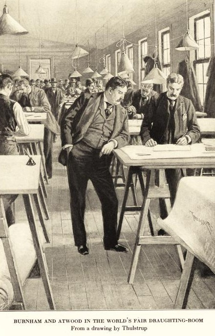
The buildings were temporary. Their structural frames were wood and iron. Their walls and ornament were staff, a mixture of plaster of Paris and jute fiber that could be cast in molds, painted white, and erected in a fraction of the time stone would take. The result was a unified neoclassical city, all white, all roughly the same cornice height around the central basin, in a country whose actual cities at that moment were a riot of soot-blackened brick and competing styles. Visitors named it the White City the day it opened.

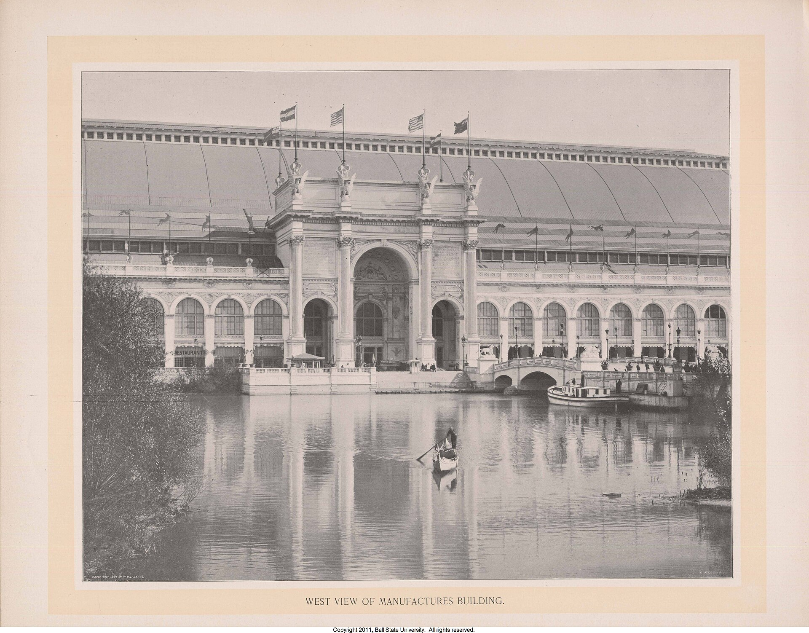
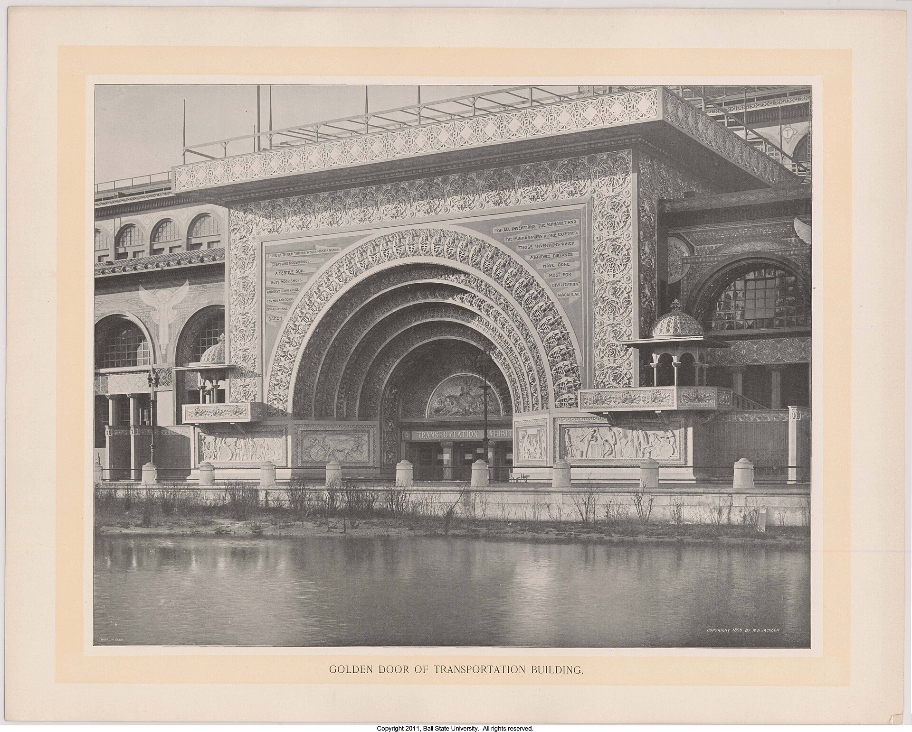
The Court of Honor
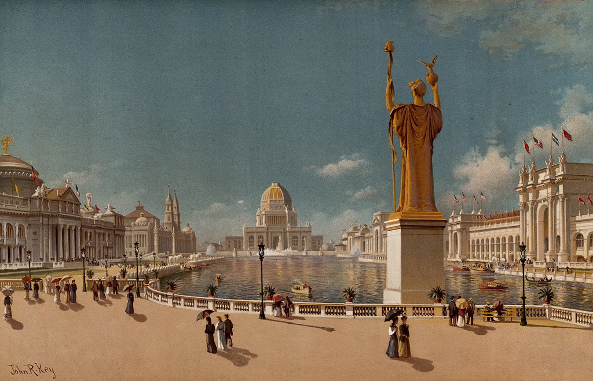
The fair's symbolic center was a rectangular basin a third of a mile long, lined on three sides by colonnaded white palaces and capped at the east end by a peristyle facing Lake Michigan. The Statue of the Republic stood at the basin's western end, gilded, holding a globe and an eagle. The whole composition was lit at night by Westinghouse's alternating-current system, the first major event in history illuminated electrically at scale. People who saw the Court of Honor at night in 1893 wrote about it for the rest of their lives.
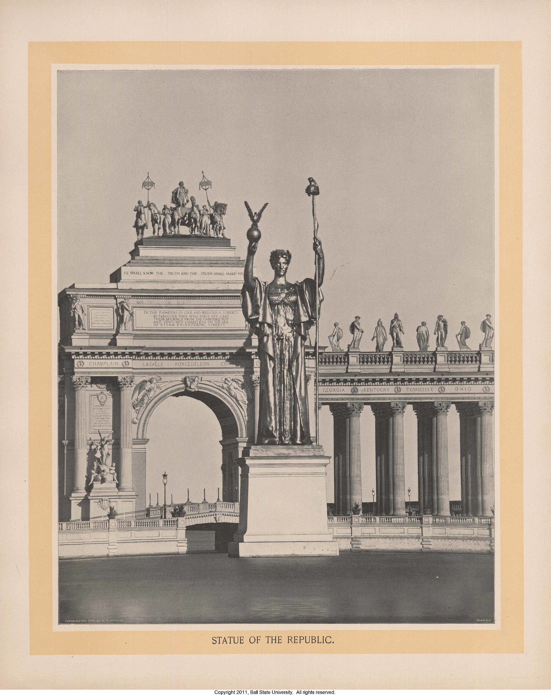
This is the Beaux-Arts grandeur the United States lost. The Court of Honor was not a parking lot. It was not a stadium. It was not an arena named after an insurance company. It was a public room, sized for 200,000 people, designed so that an immigrant from a Lithuanian village or a farmer from Kansas would walk through it and understand that he was a citizen of a serious country.
The War of the Currents
The fair was lit by Westinghouse Electric, which had won the lighting contract in May 1892 with a bid of $399,000. Edison and General Electric had bid $554,000 to do it in direct current. Westinghouse undercut them by a quarter of a million dollars using Nikola Tesla's polyphase alternating-current patents. On opening day, May 1, 1893, President Cleveland pressed a telegraph key in the Administration Building and roughly 100,000 incandescent lamps came on at once. It was the largest single switching event in the history of electricity to that date and it was the moment alternating current won. Within two years Westinghouse had the Niagara Falls contract. Edison's company had reorganized as General Electric and abandoned direct current. The grid the United States runs on today is the system that lit Burnham's basin in 1893.
Tesla himself attended the International Electrical Congress at the fair for one week. He demonstrated wireless illumination of phosphorescent gas-discharge lamps in a darkened room in the Electricity Building using high-frequency AC fields generated between two plates eighteen feet apart. The lamps glowed with no visible connection to any wire. The audience walked out and told everyone they knew. The demonstration is documented in the Tesla Society archive and in the IEEE Engineering and Technology History wiki.
633 acres of reclaimed Chicago lakefront swamp
200+ major buildings designed and built in 26 months
30 acres under one roof in the Manufactures Building
27.5 million visits in six months (US population: 63M)
$1 million the fair returned in profit despite a national depression
The Buildings
The Exposition's Department of Construction inherited 633 acres of reclaimed swamp and a 26-month deadline. What it produced was a coordinated city of more than 200 structures, organized around a central basin and a system of lagoons that Olmsted had spent the previous year cutting into the lake bed. The major exhibit buildings were grouped into a core ring around the Court of Honor and an outer ring along the north lagoon. Foreign pavilions occupied a state row to the north. State pavilions occupied a separate row to the east. The Midway Plaisance, a 600-foot-wide boulevard running a mile west from the main grounds, housed the international villages and the concessions. What follows is a tight registry of the principal buildings, their architects, and what happened inside.
The Court of Honor
Administration Building. Richard Morris Hunt. A square plan, 250 feet on a side, capped by a gilded octagonal dome 250 feet tall and 120 feet across, with four corner pavilions and four arched entrances. The dome and pavilions were the visual capstone of the entire fair. President Cleveland threw the switch starting Westinghouse's 100,000-lamp display inside the rotunda on May 1, 1893. Hunt received the gold medal of the Royal Institute of British Architects for the design before he died in 1895. Burned in the July 1894 fire.
Manufactures and Liberal Arts Building. George B. Post. 1,687 by 787 feet, 31 acres under one roof, the largest enclosed structure in the world at its opening. Steel arched-truss roof spanning 380 feet at the apex. Housed Tiffany's chapel, the Krupp display, Edison's exhibits, and the Pledge of Allegiance dedication recitation of October 21, 1892 by thousands of schoolchildren. Burned in July 1894.
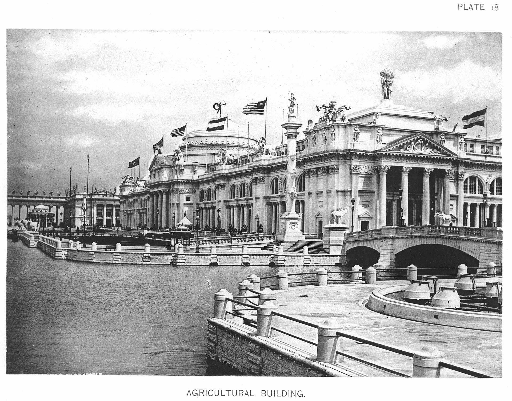
Agricultural Building. McKim, Mead & White. A neoclassical palace 800 by 500 feet on the south basin, capped by Saint-Gaudens's gilded Diana (originally cast for Madison Square Garden). The exhibits were organized by state and by crop: corn, wheat, cotton, dairy, tobacco. The R. T. Davis Milling Company of St. Joseph, Missouri ran its Aunt Jemima booth on the east balcony, with Nancy Green cooking pancakes beside a 24-foot replica of the world's largest flour barrel. The Diamond Milling Company of Grand Forks, North Dakota showed its new wheat farina, branded Cream of Wheat. Burned in July 1894.
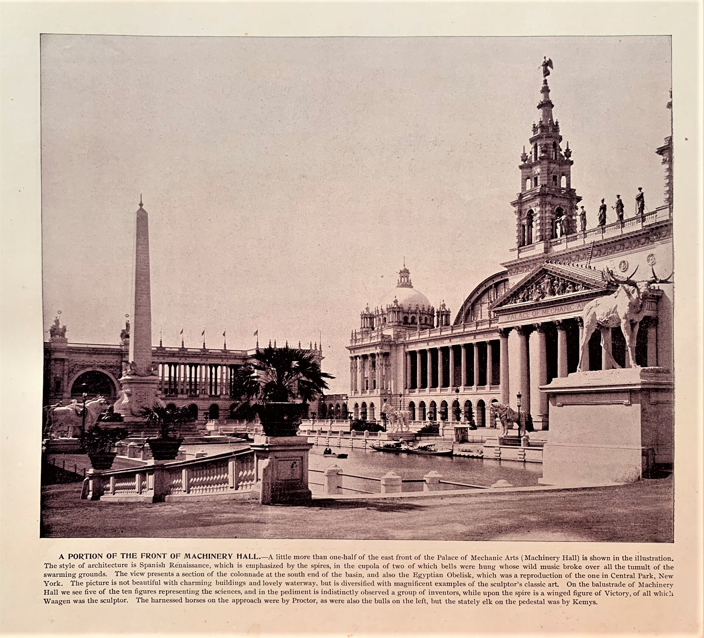
Machinery Hall. Peabody & Stearns. 850 by 500 feet, with a triple-naved Spanish-Renaissance facade. Working steam engines, dynamos, hydraulic presses, lathes, and a complete textile mill ran continuously throughout the fair. The hall's generators provided supplementary power to the Westinghouse plant. Burned in July 1894.
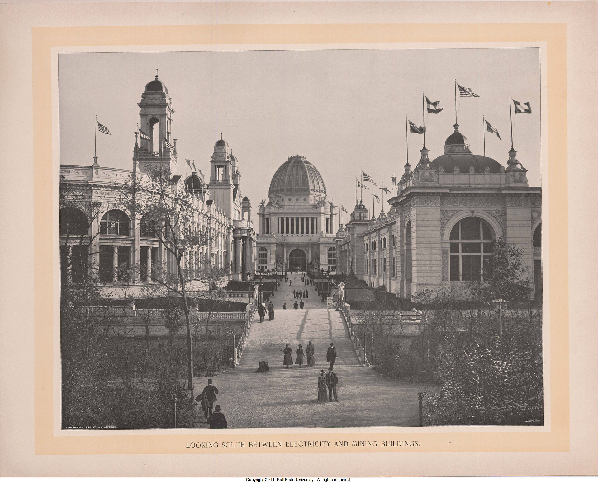
Electricity Building. Van Brunt & Howe of Kansas City. 345 by 690 feet, 5.5 acres, $401,000. Westinghouse displayed its polyphase alternating-current system, the 1,988-lamp Columbus mural, and the General Electric Tower. Tesla conducted the high-frequency wireless lamp demonstrations described earlier from a darkened room inside the building. Edison's kinetograph and his commercial telephone exhibit also lived here. Burned in July 1894.
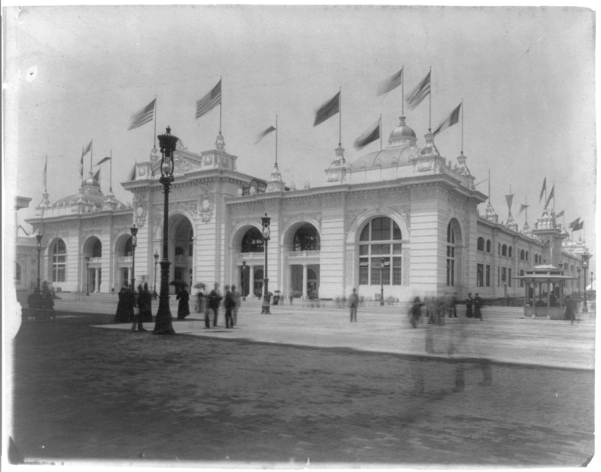
Mines and Mining Building. Solon S. Beman, the Chicago architect who had built the Pullman company town. 700 by 350 feet. Coal, copper, silver, gold, and iron displays from every major mining state and territory, including a complete reproduction of a Comstock Lode shaft from Virginia City, Nevada. The Krupp Company also showed its full mining-equipment line here, separate from its main 122-ton gun, which sat outside in its own pavilion. Burned in July 1894.
The Northern Lagoon
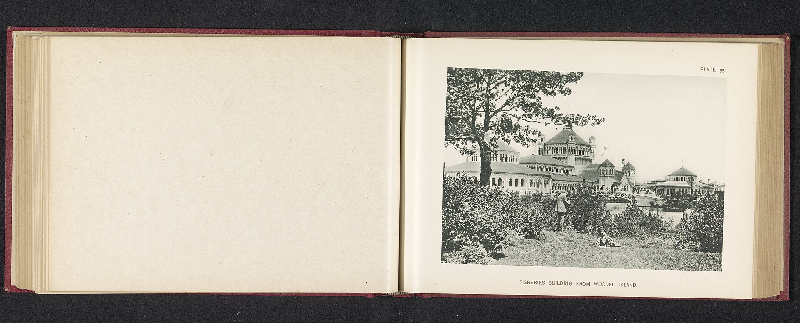
Fisheries Building. Henry Ives Cobb. The only major building at the fair built in a Spanish-Romanesque idiom rather than the Beaux-Arts of the Court of Honor. Its arcades and column capitals were carved with fish, crustaceans, frogs, and serpents instead of the standard acanthus leaves — the most ornamentally inventive program at the fair after Sullivan's. Inside: live aquaria for freshwater and saltwater fish, the United States Fish Commission's complete national-fishery exhibit, and the working hatchery. Burned in July 1894.
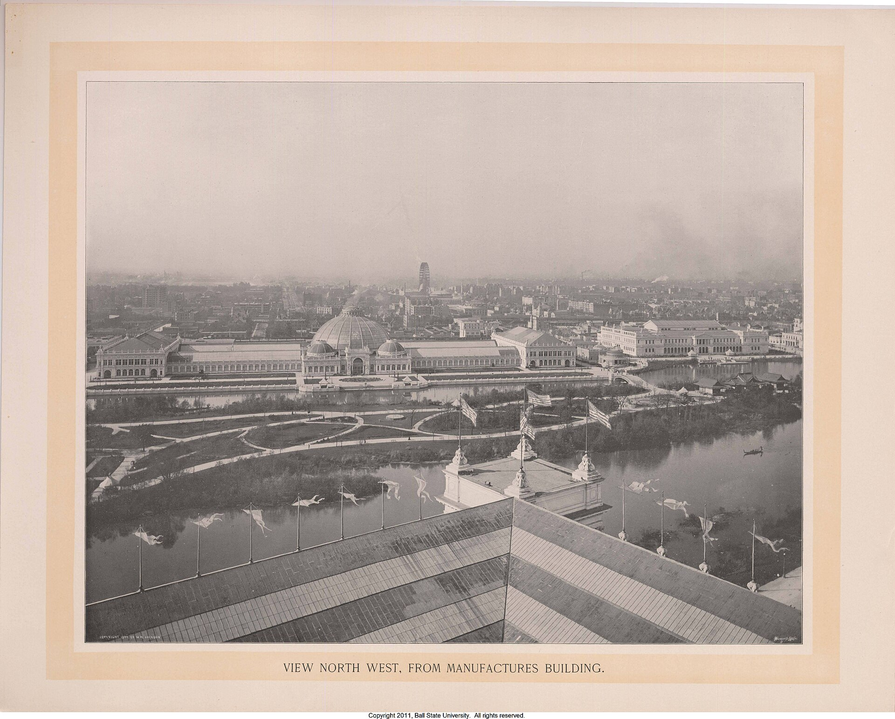
Horticultural Building. William LeBaron Jenney, the Chicago architect who had built the Home Insurance Building of 1885 (generally cited as the first skyscraper). 1,000 feet long, with a central crystal-palace dome 187 feet tall. At its opening it was the largest greenhouse in the world. Inside: a complete tropical conservatory, citrus trees from California, orchids from Ceylon, palms from the Mediterranean, and the Smith & Hawken collection of edible plants. Burned in July 1894.
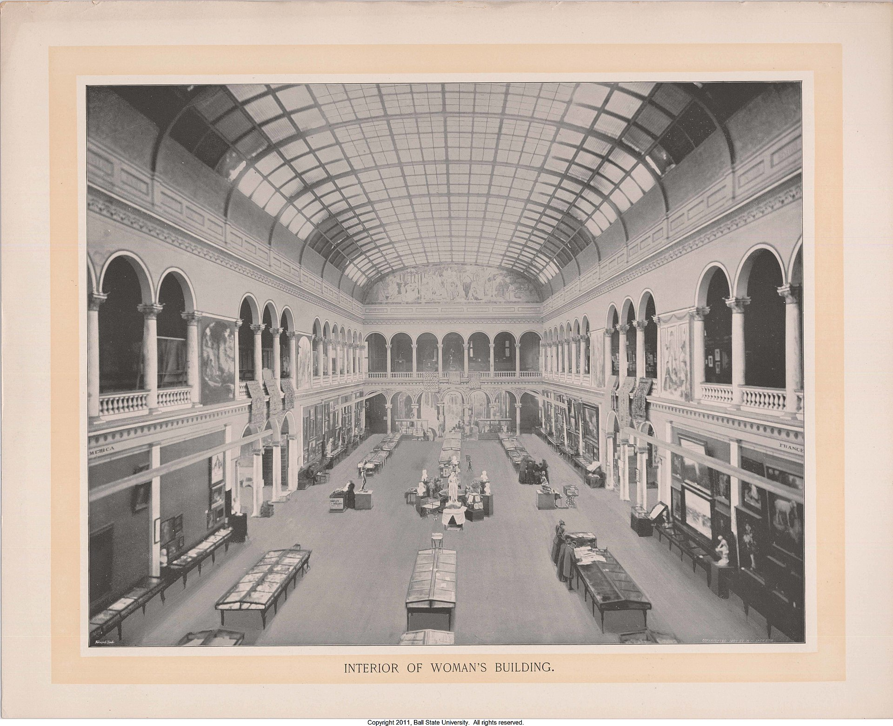
Woman's Building. Sophia Hayden of Boston. 388 by 199 feet, 82,698 square feet including the second-floor gallery, $138,000. Hayden was twenty-one and had just graduated from the architecture program at the Massachusetts Institute of Technology when she won the competition. She was the first woman to design a major building at any World's Fair anywhere. The interior housed Mary Cassatt's mural "Modern Woman," the Library, the Assembly Room, the Hall of Honor, and exhibits from women's organizations across the country. Burned in July 1894.
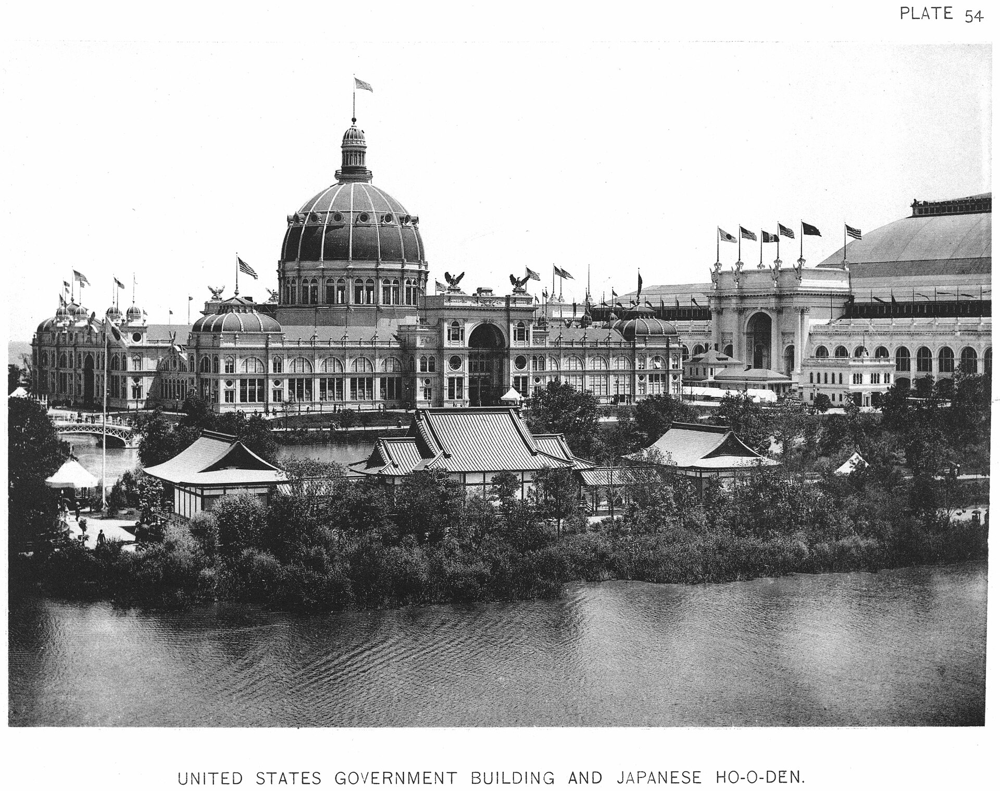
United States Government Building. W. J. Edbrooke, Supervising Architect of the U. S. Treasury. 350 by 420 feet. A consolidated federal exhibit: the Smithsonian Institution's natural history, the Patent Office's working scale models, the U.S. Mint's coin presses running live, the Coast and Geodetic Survey's chart room, the Post Office Department (where the first US commemorative postage stamps, the Columbian Issue, were sold), the Department of Agriculture, the Department of Education, and the War Department. Burned in July 1894.
Atwood's Buildings
Charles B. Atwood took over as Designer-in-Chief after Root's death in January 1891. In the next eighteen months he produced an extraordinary body of work for a man given that little time.
Palace of Fine Arts. 261,073 square feet, $670,000. The only major building at the fair constructed of permanent materials (brick over a steel frame, faced in staff). It survived the 1894 fire because its core was masonry. Refinished in stone by Julius Rosenwald in the early 1930s, it reopened in 1933 as the Museum of Science and Industry.
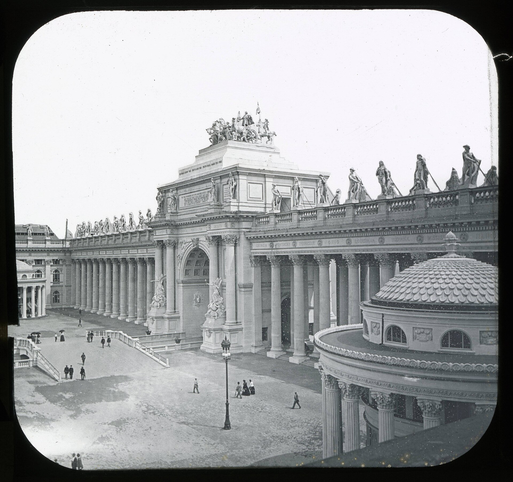
The Peristyle. The 65-column Corinthian colonnade closing the east end of the Grand Basin at Lake Michigan. At the apex stood Daniel Chester French's chariot of Columbus, four horses abreast. Burned in July 1894.
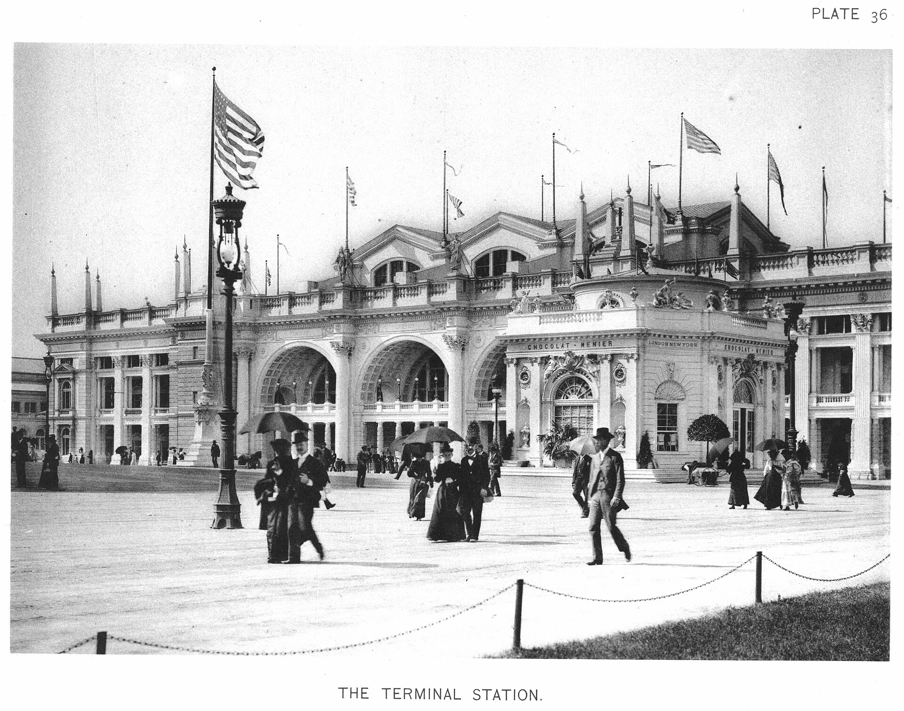
Terminal Railroad Station. 750 by 250 feet, with a steel-truss train shed. The first building most fairgoers saw on arrival. Forty-two railroad lines fed into the station; the Illinois Central ran a special shuttle from downtown Chicago every five minutes. Burned in the July 1894 fire — it was the first major building to go.
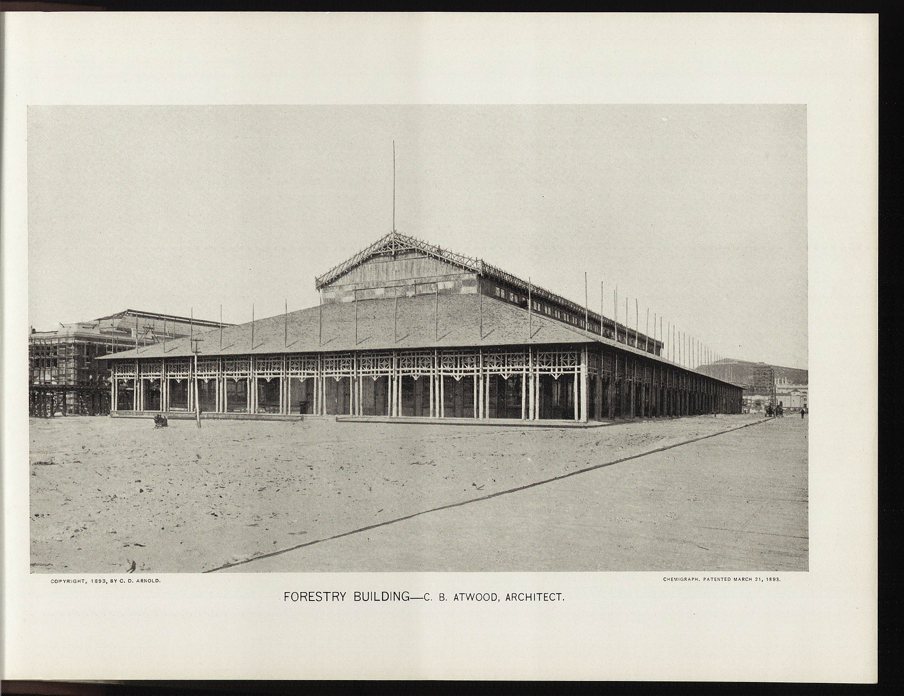
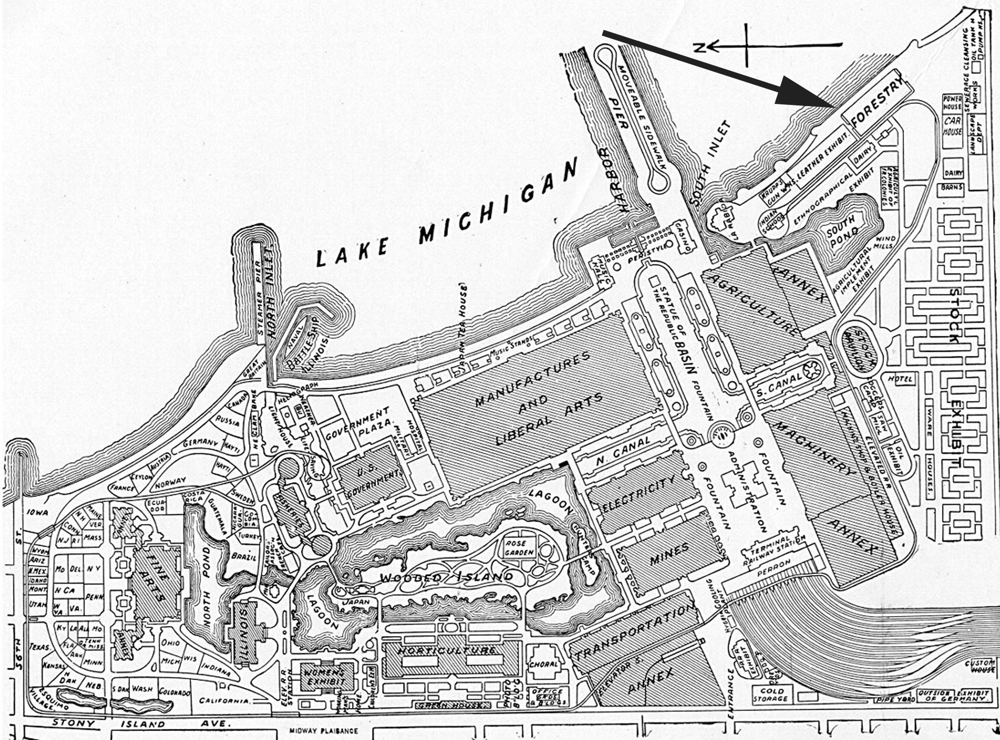
Forestry Building. 109,824 square feet, $100,000. Its facade was a colonnade of unmilled tree trunks contributed by every state and territory in the union, each labeled with its species and source. Inside: the United States Forest Service exhibit, complete cross-sections of redwoods from California, and the General Noble Redwood Tree House (a single 26-foot-diameter sequoia slab hollowed out into a cabin). Burned in July 1894.
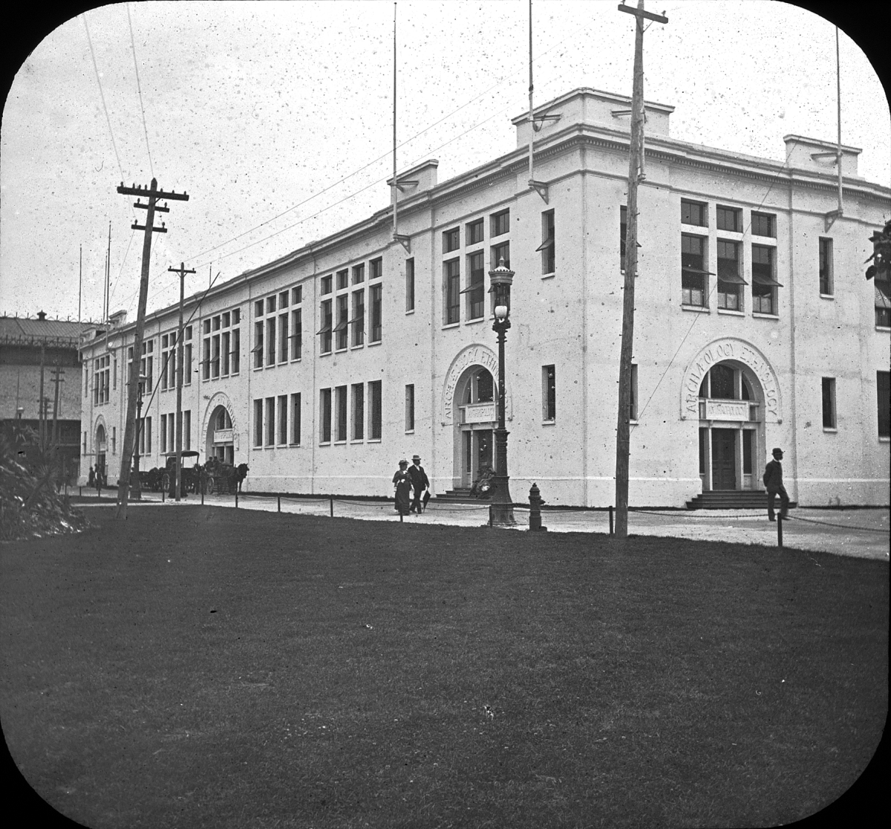
Anthropological Building. 105,825 square feet. Frederic Ward Putnam of Harvard's Peabody Museum directed the ethnographic and anthropological displays inside, including the Bureau of American Ethnology collections, the Boas collection from the Northwest Coast (curated by a young Franz Boas), the Cyrus Thomas mound builder exhibit, and the complete physical anthropology lab where Putnam's graduate students took skull measurements of fairgoers. Burned in July 1894.
State and Foreign Pavilions
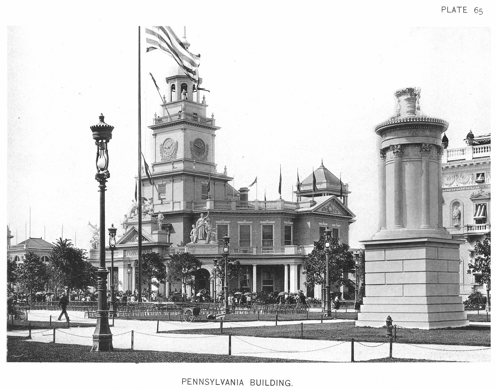
Forty-four of the forty-six states (and forty foreign nations) built their own pavilions on a state row east of the Government Building. The Pennsylvania State Building housed the actual Liberty Bell, traveled by rail from Philadelphia with a Philadelphia honor guard. The Illinois Building was the largest state pavilion. The California Building was a replica of a Spanish mission. The Convent of La Rabida, a reproduction of the Franciscan monastery where Columbus had lodged before his 1492 voyage, housed Columbus artifacts including the original 1493 letter. The Ho-o-den, or Japanese Phoenix Pavilion, sat on the Wooded Island in the middle of Olmsted's central lagoon. It was a half-scale reproduction of the 11th-century Byōdō-in temple at Uji, donated by the Japanese government. Frank Lloyd Wright, then twenty-five and working in Sullivan's office, walked through it and wrote later that it was the foundation of his understanding of Japanese architecture. It survived the fire and stood in Jackson Park until it burned in 1946.
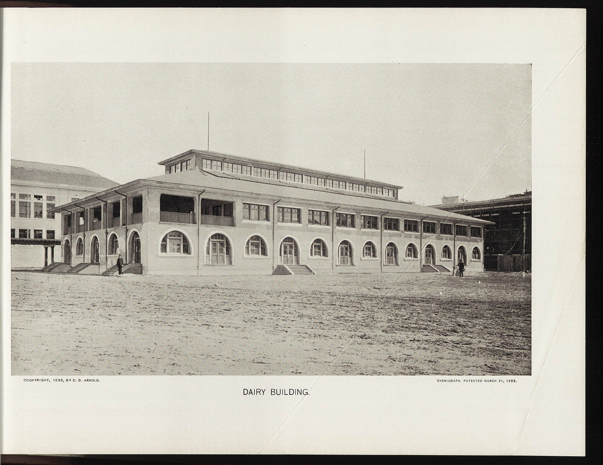
The Dairy Building, the Live Stock Pavilion, the Choral Hall, the Casino, the Music Hall, the Children's Building, the Café de la Marine, the Leather Shoe Trades Building, the Mechanic Arts Annex, the Cold Storage Building (which burned on July 10, 1893 in its own catastrophic fire that killed 16 firefighters), and the Battleship Illinois (a wooden replica of an Indiana-class battleship moored permanently on the lakefront) rounded out the smaller program. The Convent of La Rabida and the Ho-o-den were two of only a handful of structures that survived the July 1894 fire.
Cross-Reference: Verified Debuts by Building
Administration Building (Hunt). Cleveland switching event, May 1, 1893 — 100,000 lamps lit at once.
Manufactures and Liberal Arts Building (Post). Pledge of Allegiance dedication recitation, October 21, 1892. Tiffany's Chapel. Krupp display.
Agricultural Building (McKim, Mead & White). Aunt Jemima / Nancy Green at R. T. Davis Milling stand, east balcony. Cream of Wheat by Diamond Milling Co. of Grand Forks.
Electricity Building (Van Brunt & Howe). Tesla wireless gas-discharge lamp demonstration. Westinghouse 1,988-lamp Columbus mural. Edison kinetograph and telephone exhibits.
Mines and Mining Building (Beman). Krupp's mining equipment line. Reproduction Comstock Lode shaft.
Transportation Building (Adler & Sullivan). Sullivan's Golden Door portal, the only major polychromatic facade. Locomotive and rolling-stock exhibits from every American railroad.
United States Government Building (Edbrooke). Sale of the first U.S. commemorative postage stamps (the 1893 Columbian Issue, sixteen denominations from one cent to five dollars).
Pennsylvania State Building. The actual Liberty Bell, on loan from Independence Hall.
Convent of La Rabida. Original Columbus artifacts, including the 1493 letter.
Midway Plaisance. Ferris Wheel (George W. G. Ferris Jr. with Luther V. Rice as construction engineer). Old Vienna stand: Vienna Beef sausages by Reichel & Ladany, 10 cents each. Streets of Cairo: 26 buildings including a mosque modeled on the Qayitbay mosque, with belly-dancing performances by Farida Mazar Spyropoulos ("Little Egypt"). Muybridge's Zoopraxographical Hall: the world's first commercial motion picture theater, capitalized at roughly $6,000. Cochrane dishwasher: nine operational units installed in the Midway and fair restaurants.
Across the street (not officially on fair grounds). Buffalo Bill's Wild West Show, after the fair refused his concession application. He outgrossed every concessionaire inside the gates.
What Got Debuted There
The fair was a product showcase on a continental scale. A handful of inventions and brands have rigorously verified 1893 debuts. A much larger number of products either reached national audiences for the first time at the fair, or were sold there in significant volume, or have origin stories that turn out to be marketing folklore when you check the registry. Three categories follow.
Verified inventions. The Ferris Wheel, designed by George Washington Gale Ferris Jr. and approved by Burnham's committee only after three prior rejections, opened to riders on June 21, 1893. It stood 264 feet tall, carried 36 cars, and was conceived specifically as the American answer to the Eiffel Tower of the 1889 Paris Exposition. Whitcomb Judson's clasp locker, the direct ancestor of the modern zipper, was patented in 1893 and shown at the fair through the Universal Fastener Company. Josephine Garis Cochran's automatic dishwasher, patented in 1886 but commercially obscure, was installed in nine fair restaurants and won the top prize for mechanical construction; the largest model washed 240 dishes in two minutes. Tesla's polyphase alternating-current system, described in the preceding section, ended the War of the Currents at the fair.
National marketing debuts. Cream of Wheat was introduced by the Diamond Milling Company of Grand Forks, North Dakota under foreman Tom Amidon. The fair was its national public launch. Aunt Jemima pancake mix, owned by the R. T. Davis Milling Company, hired Nancy Green to demonstrate live at the fair beside a 24-foot replica of the world's largest flour barrel. Green's performance generated over 50,000 wholesale orders. The brand itself predated the fair (Pearl Milling, 1889), but its mass-audience debut was 1893. Milton Hershey, then a Lancaster caramel manufacturer, walked through the fair, watched the J. M. Lehmann Company of Dresden run a complete chocolate-making line, and paid roughly $20,000 for the equipment before the fair closed. Hershey Chocolate Company was incorporated in February 1894. Vienna Beef was founded at the fair when Emil Reichel and Samuel Ladany sold beef sausages with mustard and onions for ten cents at the Old Vienna stand on the Midway. They opened their Halsted Street factory in 1894. The Liberty Bell traveled by rail from Philadelphia to the Pennsylvania State Building. It was the real bell.
Westinghouse's lighting contract, Hunt's Administration Building dome, Sullivan's Golden Door, Cochran's dishwasher, and Cream of Wheat all appear in Bancroft's Book of the Fair (1893) and the Moses P. Handy Official Directory of the World's Columbian Exposition, both digitized and in the public domain. The Directory is roughly 1,120 pages and contains exhibitor listings, floor plans, and categorized exhibit indexes. It is the primary source for who was in which building.

What People Get Wrong
Two of the most-repeated debut claims about the fair are folklore, and one is not quite right.
Cracker Jack was not named at the fair. The story has a salesman in 1893 exclaiming "That's crackerjack!" and the Rueckheim brothers adopting the line. Bill Savage (Northwestern University) and Cracker Jack historian Jim Davis have both gone through the fair's vendor registry. The Rueckheims are not on it. The name "Cracker Jack" was trademarked in 1896. Caramel-coated popcorn was certainly being sold in Chicago in 1893; the brand was named three years later, somewhere else.
Pabst Blue Ribbon was not awarded a blue ribbon at the fair. The fair's judging system scored beers on a hundred-point scale and gave every entry over eighty the same bronze Saint-Gaudens medal. Pabst Best Select did receive that bronze. So did seventeen other American beers. There was no blue ribbon competition. Captain Frederick Pabst had been tying silk ribbons on his bottles since 1882 as a packaging touch. The "Selected as America's Best in 1893" slogan was added to the label in the 1950s, sixty years later, as a marketing campaign. The Pabst Mansion's own corporate history acknowledges the timing.
The Ferris Wheel was not the world's first wheel ride. Pleasure wheels powered by hand had existed in seventeenth-century Bulgaria and Ottoman fairs. Ferris's contribution was scale: a steel-truss wheel that could carry 2,160 passengers at a time and stay structurally sound at 264 feet. That was the breakthrough. The wheel was also not double the price of admission. Both fair entry and a Ferris ride cost fifty cents.
The Midway
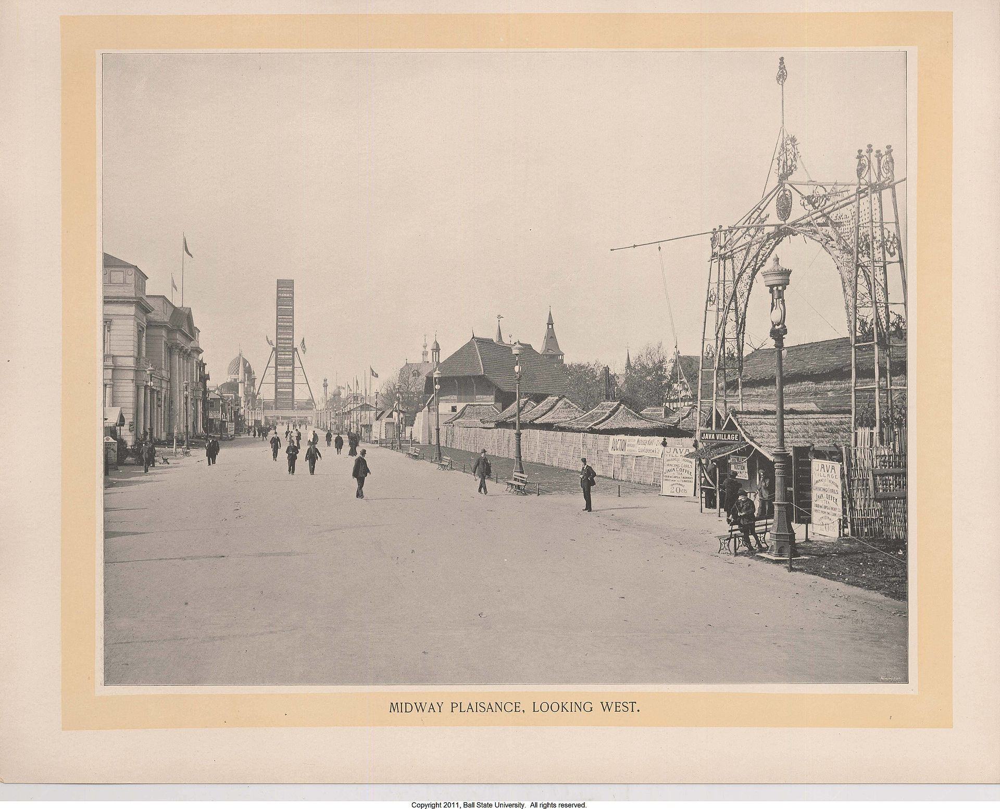
The Midway was where the fair made its money. It ran a mile west from Jackson Park along what is now the long axis of the University of Chicago campus, and it housed everything Burnham's neoclassical committee had refused to put inside the Court of Honor. International villages staffed by actual residents from the countries they represented. Beer halls. Reproductions of Cairo and Vienna and Old Algiers. A reconstructed Dahomey village. Belly dancing at the Streets of Cairo, billed as "Little Egypt." Scott Joplin playing ragtime piano in the Midway saloons years before he was famous. The Midway is where the word "midway" came from in American usage; every traveling carnival, county fair, and theme park boardwalk in the country since 1893 has used the term, and almost no one remembers why.
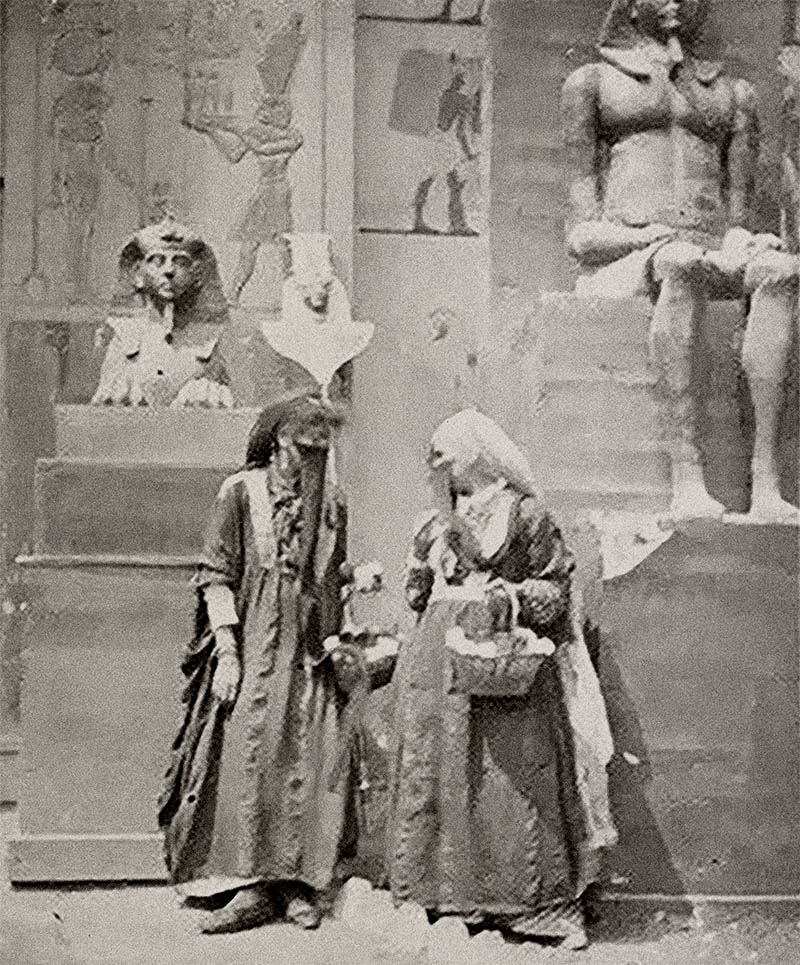

Buffalo Bill Cody set up his Wild West show across the street from the main entrance after the fair refused his concession application. He made more money than any single official concessionaire inside the gates. The crowd that gathered for Chicago Day on October 9, 1893 was 716,881 people, the largest peacetime assembly in the world to that date. The Pledge of Allegiance had been written by Francis Bellamy and published in The Youth's Companion the previous September; it was first recited en masse at the fair's dedication ceremony on October 21, 1892, six months before the gates officially opened, by schoolchildren inside the still-unfinished Manufactures Building. Frederick Jackson Turner read his frontier thesis at the American Historical Association meeting at the fair on July 12, 1893. Contemporary newspapers did not notice; the thesis became famous later.
The Last Days
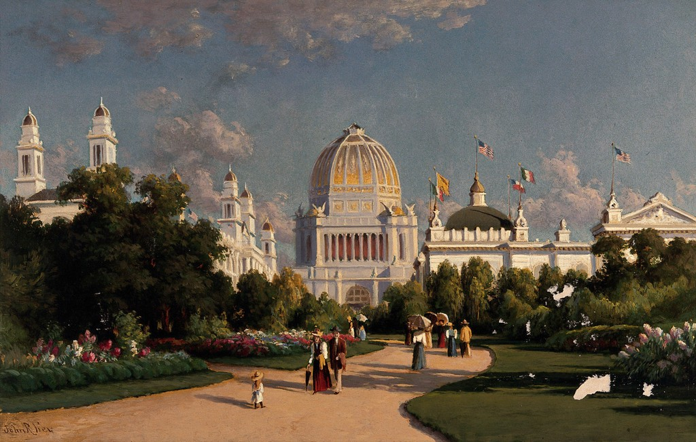
Two days before the fair's planned closing ceremony, Mayor Carter Harrison Sr. was shot at his Ashland Boulevard residence by Patrick Eugene Prendergast, a twenty-five-year-old newspaper distributor for the Chicago Inter Ocean. Prendergast had decided he was owed the position of corporation counsel for the city after the election and had come to claim it. Harrison opened his own front door because his butler was in the kitchen. Prendergast shot him three times. He died forty minutes later, at 8:47 p.m. on October 28, 1893.
The Chicago Daily News ran an evening extra that night. The headline of record, preserved in the Sun-Times historical archive and the chicagology compilation, read: "The murderer is under arrest. He gives his name as Eugene Patrick Prendergast."
The fair's October 30 closing ceremony was cancelled. The gates opened that morning but were given over to a memorial service. Black bunting was hung along the Court of Honor. The Statue of the Republic was draped. There was no music, no fireworks, no formal address. Twenty-five million people had walked through Jackson Park between May and October. Burnham wrote the next day that he had never seen the fair quiet, and that he did not want to remember it that way.
Prendergast was tried, convicted, and hanged on July 13, 1894. Clarence Darrow took over his appeal at the last minute and lost. It was Darrow's first capital case, and his only execution.
What the Papers Said
The Library of Congress Chronicling America digitized newspaper collection skews toward state and regional papers rather than the major metropolitan dailies, but it preserves enough 1893 coverage to reconstruct how the country read about the fair in real time. Five passages are reproduced verbatim below from the actual digitized page OCR, with full citations and permalinks.
Chicago Day attendance, October 9-10, 1893. The New-York Tribune, in its Monday October 9 issue (page 7), ran the day-of preview: "READY FOR CHICAGO DAY. HALF A MILLION PEOPLE EXPECTED AT THE FAIR GROUNDS TO-DAY. THE ATTENDANCE YESTERDAY THE LARGEST FOR SUNDAY YET RECORDED — PEOPLE POURING INTO CHICAGO." The next morning, the Rock Island Daily Argus, October 10, page 1, reported the actual count: "Attendance at Chicago's Day at the Exposition. SEVEN HUNDRED THOUSAND THERE. Nearly Double the Number That Was High Water Mark at Paris. An Invincible Record. GREAT CRUSH AT ALL THE GATES."
The Harrison assassination, October 28-31, 1893. The Roanoke Times of Roanoke, Virginia, ran the news on its October 29 front page under the headline "CHICAGO'S MAYOR SHOT DOWN. Assassinated at His Door by a Former Police Officer." Decked beneath it: "The Mayor Lives but a Few Moments. The Murderer, Pursued by a Crowd, Rushes Into a Police Station and Is Locked Up — Says That the Mayor Had Agreed to Make Him Corporation Counsel and Had Not Kept His Word. Eugene Prendergast the Assassin's Name — Glad He Killed Him." The lede: "Chicago, Oct. 28. — Carter Henry Harrison, five times mayor of Chicago, ex-congressman, ex-county commissioner, editor, capitalist and author, was assassinated in his own residence at 231 South Ashland avenue this evening at 8 o'clock. Three bullets entered his body and in less than one hour after the first shot was fired death ensued."
The Indianapolis Journal's same-day front page led with "CARTER HENRY HARRISON ASSASSINATED. Mayor Carter Harrison, of Chicago, Killed by a Crank. Shot Three Times, Early Last Night, by Patrick Eugene Prendergast, a Carrier of Newspapers."
Two days later, the Record-Union of Sacramento, California opened its October 30 page with a stark elegy that captured what the assassination meant to Chicago at the closing of the fair: "Chicago to-day is overwhelmed with sorrow and shame. Her citizens mourn for the man who stood closer to the people's hearts than any other who has lived or died within her boundary lines, or has been in any way connected with the city's growth and progress. The feeling of shame is that just at the close of the greatest and most glorious period of her municipal history, just at the dawn of a brighter period than she ever before experienced, the dark crime of murder should leave a red blot on her record."
By October 31, the Wheeling Daily Intelligencer of West Virginia had moved to the editorial register, titling its piece "Concerning 'Harmless Cranks.'" It opened: "When Guiteau assassinated President Garfield there was a good deal of discussion of the so-called 'harmless cranks' and the proper disposition to be made of them. Now, naturally enough, there is more discussion." The Prendergast-as-Guiteau parallel was drawn within seventy-two hours.
Permalinks (Library of Congress, Chronicling America): Roanoke Times (sn86071868) Oct 29 1893 seq-1; Indianapolis Journal (sn82015679) Oct 29 1893 seq-1; Record-Union (sn82015104) Oct 30 1893 seq-1; Wheeling Daily Intelligencer (sn84026844) Oct 31 1893 seq-4; Rock Island Daily Argus (sn92053945) Oct 10 1893 seq-1; New-York Tribune (sn83030214) Oct 9 1893 seq-7; Richmond Dispatch (sn85038614) Jul 7 1894 seq-8.
What Burned
The plan after the closing was to dismantle the staff buildings over the winter and rebuild the basin as a public park. In May 1894 the Pullman Strike began at the Pullman company town south of the fair and turned into a national railroad action. By July it had spread to Chicago proper. On the night of July 5, 1894, fires set during the strike spread to the fairgrounds. The Terminal Station went first. Then the Manufactures Building, which had held thirty acres under one roof, burned in a single night. The Court of Honor went next. By the morning of July 6, the basin was still there. Olmsted's lagoons were still there. The colonnades were gone. The Statue of the Republic stood alone over a field of ash.
It was the largest urban fire in Chicago since 1871, and it consumed in a few hours what the country had spent two years building. The Pullman Strike turned the destruction of the White City into a political symbol of what industrial labor conflict could do to a country at the end of the nineteenth century. Burnham, in private correspondence, described the fire as a mercy. He had not wanted to watch the staff buildings be slowly torn down.
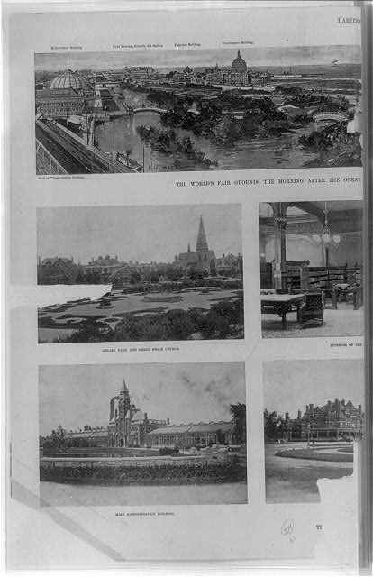
The Richmond Dispatch, July 7, 1894, page 8, ran the headline that has stuck in the historiography ever since: "SEA OF WHITE ASHES — Four of the Handsomest World's Fair Buildings Destroyed — FIERCE SPREAD OF THE FLAMES — The Terminal Station, Agricultural, Mining, Electricity, and Administration Buildings a Mass of Ruins." The body of the article opened: "The World's Columbian Exposition is a billowy sea of white ashes, calcined staff, and twisted steel girders."
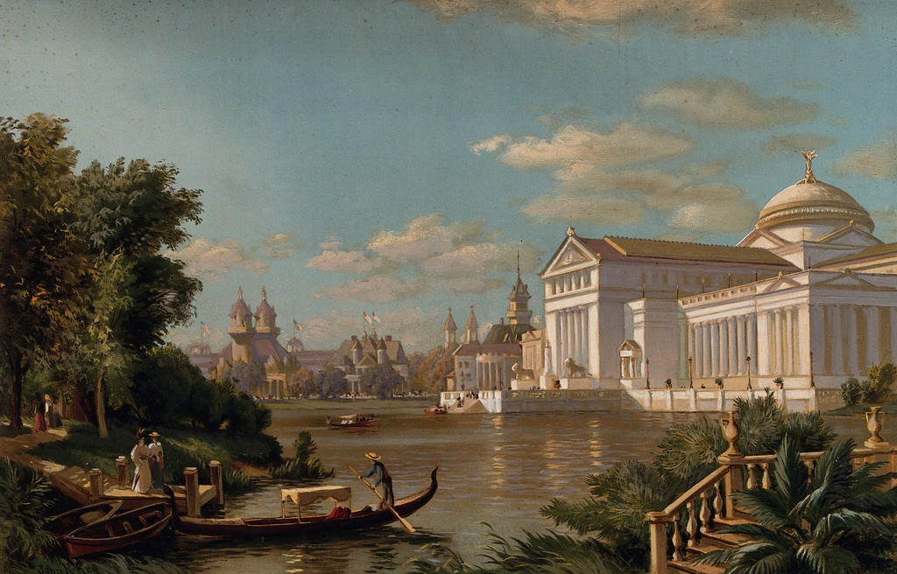
The Survivor
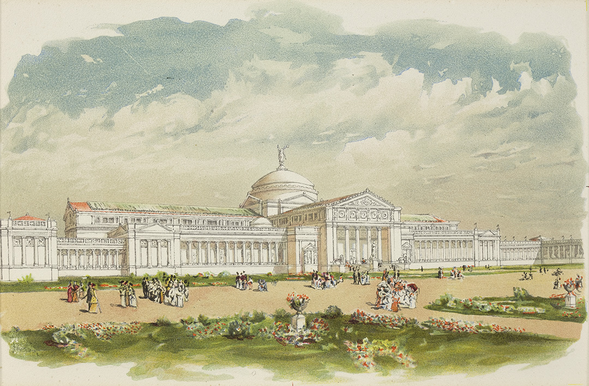
One major building did not burn. Charles B. Atwood's Palace of Fine Arts was built of brick over a steel frame and faced in staff like the rest, but its core was permanent because it housed actual art that had to be insured. When the staff covering rotted in the late 1920s, Julius Rosenwald paid five million dollars of his Sears, Roebuck fortune to refinish it in stone. It reopened in 1933 as the Museum of Science and Industry. It is the most-visited science museum in the Western Hemisphere. The building you walk into when you visit MSI is, structurally, Atwood's fair pavilion.
Olmsted's lagoons, the Wooded Island, and the basin became Jackson Park, one of the great Olmsted-designed public parks in the United States and the site Barack Obama selected for the Obama Presidential Center a century and a quarter later. Olmsted is buried in Hartford. His Jackson Park drawings are at the Library of Congress.
What It Set in Motion
The City Beautiful movement followed almost immediately. Senator James McMillan of Michigan had walked the Court of Honor in 1893, and by 1901 he was saying openly that everything his Senate Park Commission was preparing to do for Washington came straight out of what they had seen in Jackson Park. The commission's report, adopted by the Senate in 1902, became the McMillan Plan. It restored L'Enfant's Mall to its original design and laid out the Lincoln Memorial axis the country still walks every Fourth of July. Within four years of that, Cleveland had its own Group Plan organized around a civic mall, San Francisco had hired Burnham for the plan the 1906 earthquake would interrupt the next April, the Taft administration had handed him Manila and Baguio, and the Commercial Club of Chicago had asked him to do at home what he had been doing for everyone else. The Plan of Chicago, published in 1909, was the culmination of the whole sequence. None of those commissions exist without the fair.
Burnham himself. Before the fair he was a successful Chicago commercial architect. After the fair he was the most powerful planner in the United States, the man every major city called when it wanted to imagine itself as something larger.
Why It Matters
The Columbian Exposition is the load-bearing event in American civic history. It is the moment the United States proved to itself that it could organize a large public undertaking on the scale of European capitals, and that it could do so beautifully. Every monumental American civic building constructed between 1900 and 1940 is downstream of it. The Lincoln Memorial. Union Station in Washington. Grand Central Terminal. The New York Public Library. The Federal Triangle. The state capitols of Wisconsin, Pennsylvania, Minnesota, and Washington. They all carry the visual program the country first saw in Jackson Park in 1893.
It is also the event that produced Burnham. Without the fair there is no McMillan Plan. There is no Plan of Chicago. There is no Plan of San Francisco, no Plan of Manila, no Plan of Baguio. There is no City Beautiful movement. There is no civic-architecture vocabulary for the United States to rediscover.
And it is a useful counterargument every time someone says a serious public undertaking is impossible in the modern United States. The fair was built in 26 months by a 47-year-old architect, on a swamp, during a national depression, with mostly private money, and it drew a crowd equal to 44 percent of the population of the country. It was not impossible then. It is not impossible now. The argument that it cannot be done is a cultural failure, not a logistical one.
What TBC Is Doing
The Columbian Exposition is the founding document of this organization. We are named for the man who built it. Our 47 Shifts model is a direct descendant of the coordination Burnham used in Jackson Park: a small number of leaders, given specific assignments, working to a fixed deadline, on a shared visual program. We talk about it constantly because almost no one in the contemporary United States, including most architects, has been taught what actually happened in the summer of 1893.
We are publishing primary sources, photographs, and the Burnham archive. We are making the case that the country that built the White City in 26 months is the same country still alive in the records, and that what was possible in 1893 is more possible now, with all the technology and capital we have added since. The Court of Honor is gone. The program that produced it is recoverable.
Sources & Notes
Primary sources. Handy, Moses P., ed. The Official Directory of the World's Columbian Exposition. Chicago: W. B. Conkey Company, 1893 (~1,120 pp.). Internet Archive (officialdirector00worl), HathiTrust (Record 011209194), Library of Congress (loc.gov/item/05028674/). Bancroft, Hubert Howe. The Book of the Fair. Chicago: The Bancroft Company, 1893 (issued in 25 parts). Smithsonian Libraries (library.si.edu/digital-library/book/bookfair1banc), Internet Archive (bookfair1banca), HathiTrust (Record 100206082). Johnson, Rossiter, ed. A History of the World's Columbian Exposition, 4 vols., 1898.
Architecture & planning. Hines, Thomas S. Burnham of Chicago: Architect and Planner. University of Chicago Press, 1974. Sullivan, Louis H. The Autobiography of an Idea. 1924. Encyclopedia of Chicago (encyclopedia.chicagohistory.org). Chicagology compilation (chicagology.com/columbiaexpo/). Worldsfairchicago1893.com.
Tesla, Westinghouse, AC. Tesla Society (teslasociety.com/columbia_expo.htm). Tesla Science Center at Wardenclyffe (teslasciencecenter.org/pivotalmoments/columbian-expositions/). IEEE Engineering and Technology History Wiki (ethw.org). National Park Service, "Inventions From the World's Columbian Exposition" (nps.gov/articles/000/inventions-from-the-world-s-columbian-exposition.htm).
Product debuts & myth-busts. Chicago History Museum, "Foods of the 1893 World's Fair" (chicagohistory.org/foods-of-the-1893-worlds-fair/). WBEZ Curious City, "From Vienna Beef to PBR: Five food and drink legacies of the 1893 World's Fair," May 2019 (wbez.org/curious-city). Bill Savage (Northwestern) on Cracker Jack. Pabst Mansion corporate history on the Blue Ribbon slogan timeline. Hershey Community Archives on Milton Hershey and the J. M. Lehmann purchase.
Pledge of Allegiance. Digital Chicago History Project, "Autopsy of the Pledge of Allegiance" (digitalchicagohistory.org/exhibits/show/autopsy-of-the-pledge-of-alleg/pledge-chicago-connection). Smithsonian National Museum of American History.
Carter Harrison Sr. assassination. Wikipedia, "Assassination of Carter Harrison III." Encyclopedia of Chicago, "Carter Harrison Sr." (encyclopedia.chicagohistory.org/pages/2386.html). Chicago Sun-Times historical feature, October 28, 2021 (chicago.suntimes.com/2021/10/28/22747214/). Chicagology, "Harrison Murder" (chicagology.com/notorious-chicago/harrisonmurder/). Larson, Erik. The Devil in the White City, 2003.
Image credits. William Henry Jackson photographs (1893): Wikimedia Commons via Library of Congress, Detroit Publishing Company collection. Jackson died 1942; all 1893 works are firmly public domain. John Ross Key chromolithographs (1894, The Werner Company, Akron, OH): Wellcome Collection, CC BY 4.0 (refs. 575324i, 575347i, 575334i). Childe Hassam, Fine Art Palace, from the official World's Columbian Exposition Art Portfolio: Wikimedia Commons. C. D. Arnold (the fair's other official photographer, died 1927): Chicago Public Library C. D. Arnold Photographic Digital Collection (chipublib.org/c-d-arnold-photographic-digital-collection/). Ferris Wheel close-up: Library of Congress Prints & Photographs Division, LCCN 2006680018. Chicago Tribune, October 28, 1893, cover illustration: Wikimedia Commons.
Newspaper headlines. All passages in the "What the Papers Said" section above are reproduced verbatim from Library of Congress Chronicling America full-page OCR (chroniclingamerica.loc.gov). Direct retrieval permalinks: Roanoke Times Oct 29 1893 (sn86071868); Indianapolis Journal Oct 29 1893 (sn82015679); Record-Union of Sacramento Oct 30 1893 (sn82015104); Wheeling Daily Intelligencer Oct 31 1893 (sn84026844); Rock Island Daily Argus Oct 10 1893 (sn92053945); New-York Tribune Oct 9 1893 (sn83030214); Richmond Dispatch Jul 7 1894 (sn85038614). The major metro dailies (Chicago Tribune, Inter Ocean, Chicago Daily News, Washington Post, San Francisco Chronicle) are largely outside the NDNP digitized corpus for 1893-1894; their full text lives in ProQuest Historical Newspapers (paid) and Newspapers.com (subscription).
What we could not verify. Several claims commonly attached to the fair did not survive primary-source verification and are not asserted here: that Juicy Fruit's specific venue of debut was the fair (Wrigley's records confirm only "1893"); that Cracker Jack debuted at the fair (refuted); that Pabst was awarded a blue ribbon (refuted). The Pledge was first mass-recited at the fair's dedication ceremony on October 21, 1892, six months before the gates opened.
Have research, archives, photos, or 1893 fair connections? Tell us who you are.